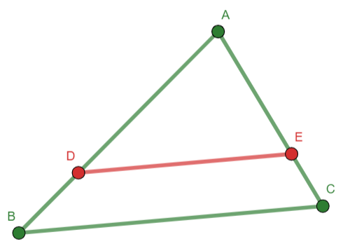

3.3 Area and Similarity¶
How do we define area? Neutral geometry has right triangles but no rectangles, so the traditional idea of a rectangular (or square) area only exists in Euclidean geometry.
Warning
In any non-Eudclidean geometry, calculating the area of a triangle will prove troublesome.
Our work is made much easier because the SMSG axiom set has an area postulate which provides the normal definition of rectangular area.
The area of a rectangle is the product of the length of its base and the length of its altitude.
—SMSG Axiom 20
We can use the SMSG Area Postulate to derive the typical formuals for the areas of triangles, trapezoids and parallelograms. The following definitions will also be helpful.
- Parallel Segments
We call line segments parallel if they are contained in lines that are parallel.
- Distance from a point to a line
Given a point \(P\) not on line \(l\), the distance between \(P\) and \(l\) is the distance \(PQ\) where \(Q\in l\) and \(\overleftrightarrow{PQ}\perp l\).
- Kite
A convex quadrilateral with two pairs of adjacent sides congruent.
- Rhombus
A parallelogram with all sides congruent.
- Square
A parallelogram with a right angle.
- Similar Polygons
Two polygons are similar provided (i) corresponding sides of each are in the same proportion, and (ii) corresponding interior angles are congruent.
Congruence is a more primitive geometric idea than similarity, even though, ironically, similarity has fewer restrictions.
Tip
Similarity proofs often use areas of triangles as numerators or deonominators to establish the required proportion. Until we have proven some results about area, proving similarity theorems is difficult.
The parallelogram decomposition theorem stated that we could always create congruent triangles by drawing the diagonal of a parallelogram and considering the two resulting triangles. The theorem is true in the reverse: given any two congruent triangles, they can be joined to create a parallelogram. We will put the following in our toolbox:
Theorems¶
The area of a parallelogram is the product of the lengths of its base and height.
Parallelogram Recomposition Theorem. If \(\triangle{ABC}\cong\triangle{XYZ}\) and \(X=B\) and \(Y=A\), then \(AZBC\) is a parallelogram.
The area of a triangle is one-half the product of the any base and the corresponding height.
The area of a trapezoid is the product of its height and the arithmetic mean of its bases.
 Area Proof of Pythagorean Theorem
Area Proof of Pythagorean TheoremPythagorean Theorem (Area Proof). If \(a\) and \(b\) are the lengths of the legs of a right triangle the hypotenuse of which has length \(c\), then \(a^2+b^2=c^2\).
Basic Proportionality Theorem. A line parallel to one side of a triangle intersects the other two sides in two different points if and only if it divides these sides into segments that are proportional.
Fig. 11 Proportionality theorem: \(\overline{DE}\parallel\overline{BC}\implies \frac{AD}{DB}=\frac{AE}{EC}\).¶
Note
The “two different points” verbiage requires the point of intersection to not be the vertex.
AA Triangle Similarity. If two interior angles of one triangle are congruent to corresponding angles of a second triangle, then the triangles are similar.
SAS Triangle Similarity. If an angle of one triangle is congruent to the corresponding angle of a second triangle, and the corresponding sides adjacent to these angles are in proportion, then the triangles are similar.
SSS Triangle Similarity. If the lengths of the sides of one triangle are proportional to the corresponding side lengths of a second triangle, then the triangles are similar.
{kind=link}